今天終於讓我拿到了 Geeksphone Revolution 手機，這是西班牙手機商 Geeksphone 於去 年所推出的手機 ，值得注意的是其創始人是個 20 來歲的年輕人 ，而這隻手機，剛出來 時就說到會支援 Firefox OS，這也是讓我對他感興趣的原因。
我一定要吐槽一下，不是都說 台灣成為 Firefox OS 研發重鎮，為什麼在台灣買不到 Firefox OS 手機 !?
這隻手機使用 Intel Atom Z2560 作為其 CPU，手機規格如下圖:

看起來規格還不錯是吧，價錢其實也算還 ok，我這隻手機購入包含運費，共花了 NT
$5398 + NT $259 (5% 營業稅) ，但是很可惜的事情是， 這隻手機並非開發者 friendly
的 ，具體原因以及如何購買這隻手機，我之後再來說明，這篇文章單純進行開箱就好 :)
首先是我從 UPS 所收到的包裹，外觀如下
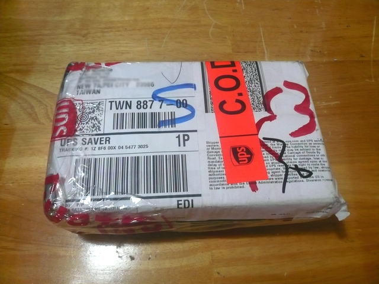
打開可怕的包裝後，可以看到一個精美的白色盒子以及 Intel 的 logo
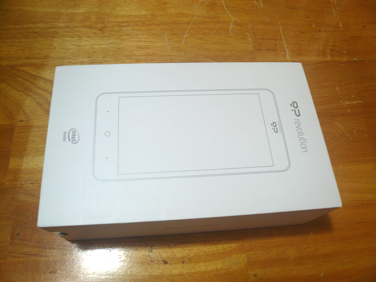
在接著打開盒子，手機本體就出現了
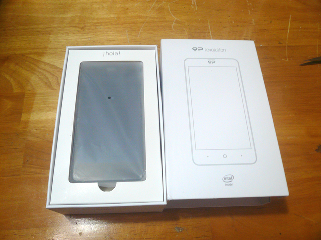
再往下走，會看到手機底部還有東西，一定是 USB 線以及電源之類的
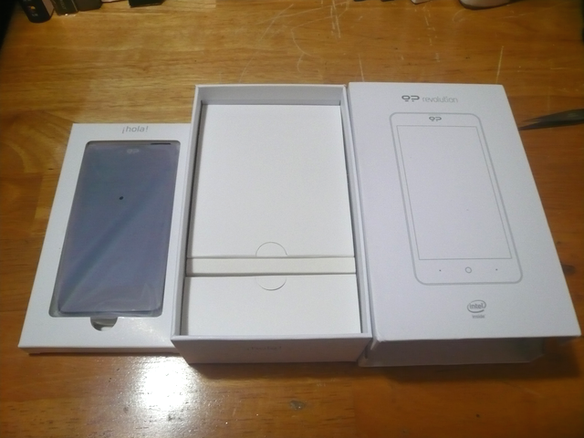
果不其然是 USB 線、電池、USB 充電器，要注意到他的充電器是 歐規 的，台灣無法使用，
不過這不重要，反正現在 USB 充電器到處都是
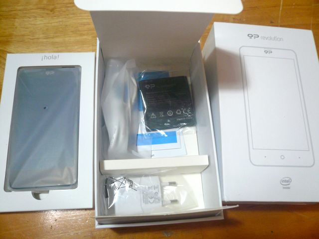
手機正面貼有保護膜(不是保護貼喔~只是一層保護螢幕用的塑膠，可以直接撕下)，為黑色 的畫面
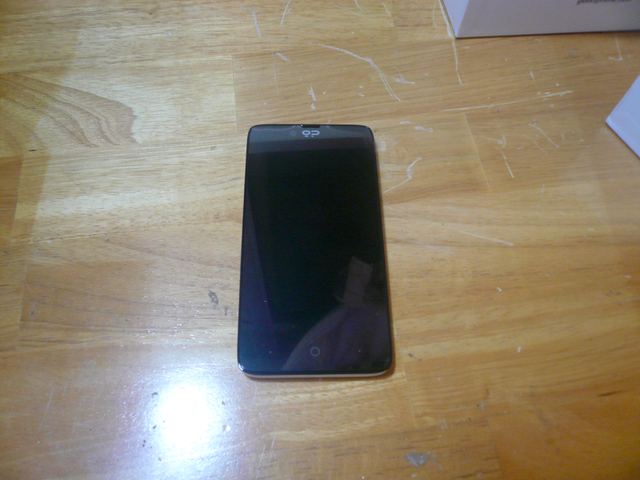
背面則是雪白色，Intel CPU 的設備好像都會被要求加上 Intel Inside 的 logo，這也是 有 故事 的
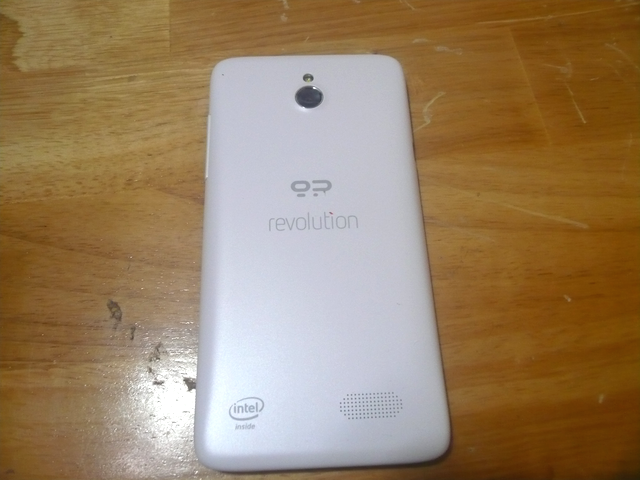
用指甲把背蓋打開，可以看到 SIM 卡以及 Micro SD 卡和電池的插槽
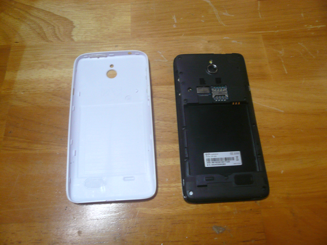
裝上電池後讓我們來開機吧，首先映入眼簾的是開機畫面
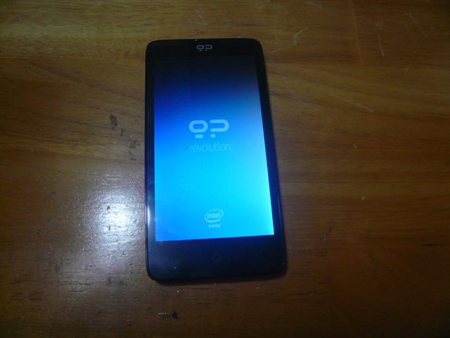
接著果不其然開機動畫又是 Intel Side….
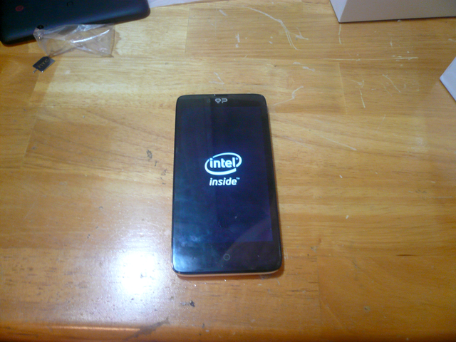
剛進系統是 Android 4.2.2 的 OS，傳說中的 Firefox OS 呢 (敲碗)
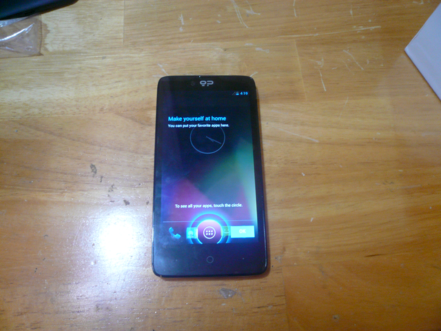
進入到 About Phone 頁面，可以看到 System updates 選項，讓我們看看有什麼
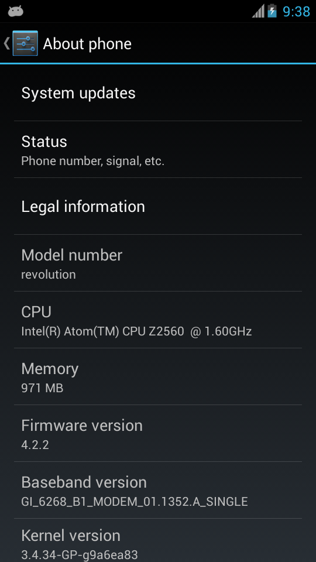
由於預設是用 AOSP 系統，因此沒有 Google Play 等程式，所以 geeksphone 就用了
類似小米的手段….，此外，這隻手機可以用 OTA 更新，也可以安裝其他系統
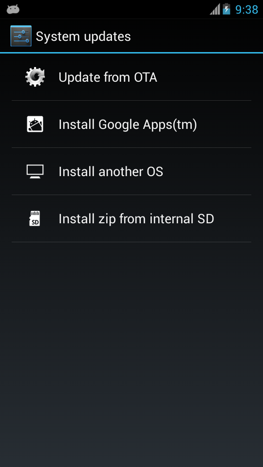
剛拿到手機的時候記得一定要更新 OS，裡面包含了新的 firmware，不過他的 AOSP 版本最 新的仍舊只是 4.2.2 的 Android
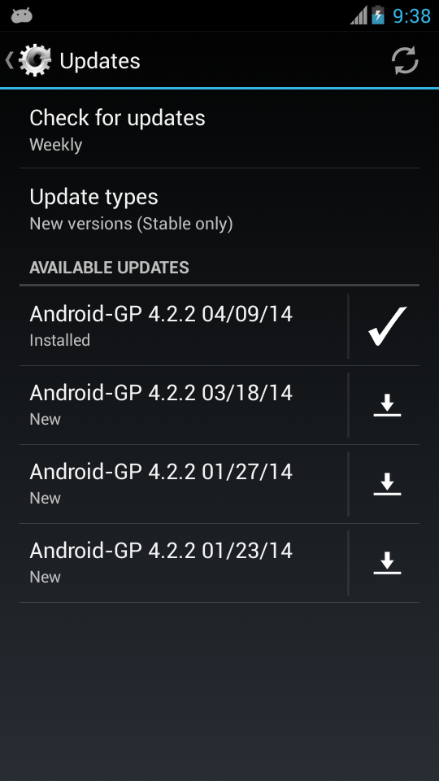
若只想待在 Android 裡面，別忘記裝上 Google 程式
我其實是為了 Firefox OS 才買這隻手機的，所以讓我們來裝 2015 年新出來的 Firefox OS 2.0 吧 (不是說都到 3.0 了嗎….)
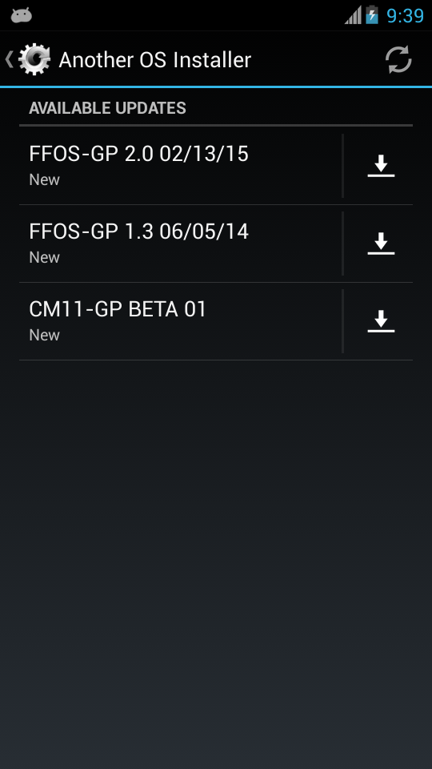
緩慢的下載中….
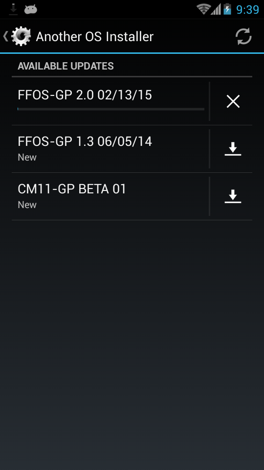
下載完成了，準備安裝
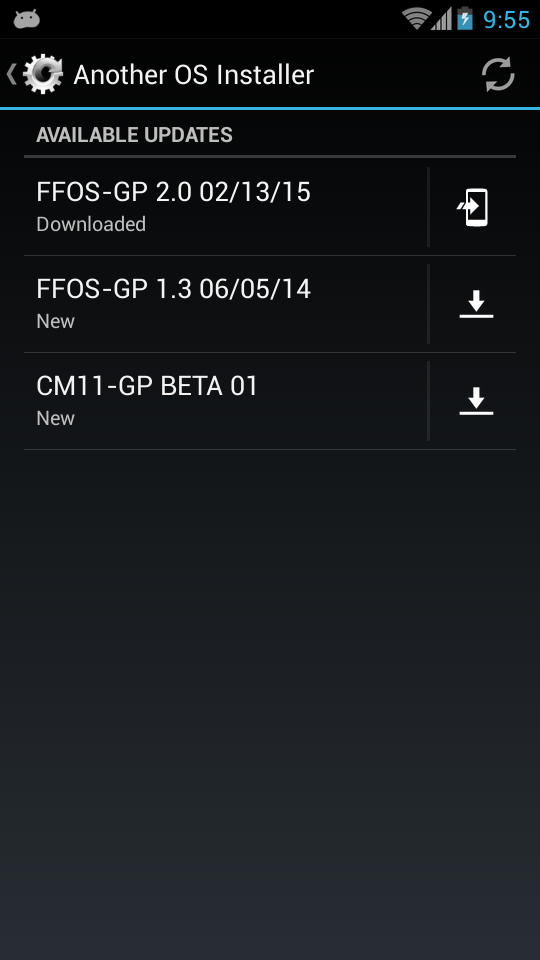
點選 Continue 然後祈禱…..
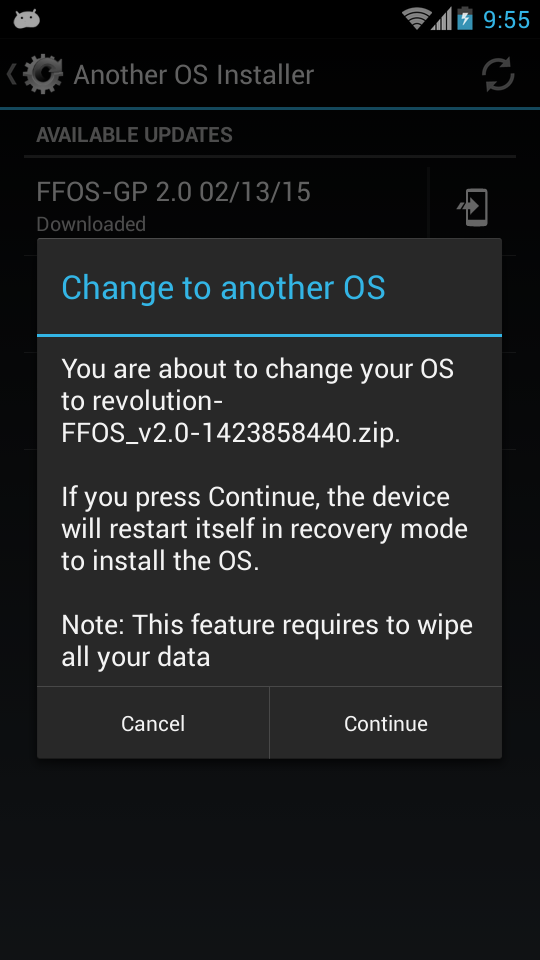
於是手機就進入到了 recovery mode，為什麼我看到簡體中文啊，這不是西班牙出產的手機嗎 XD(
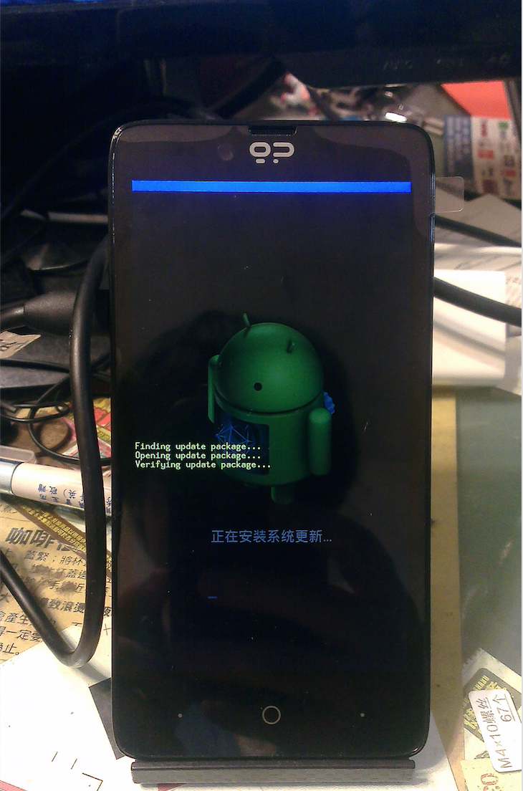
安裝完成，進入到 Firefox OS 的歡迎頁面
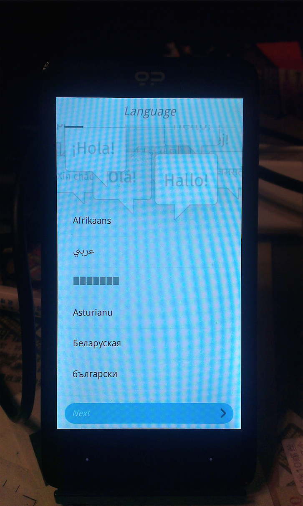
以及教學頁面
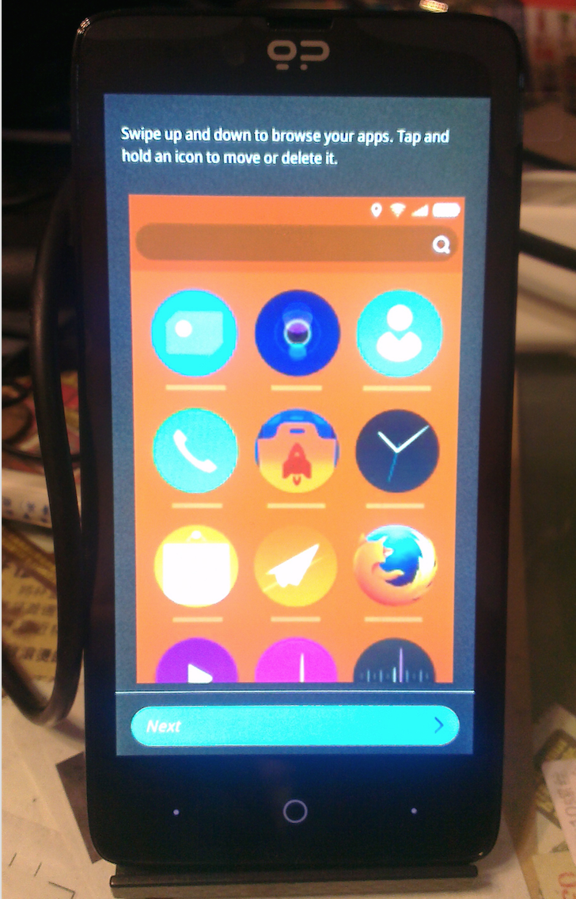
還有老實說…. Firefox OS 2.0 的介面還是沒有很好看…. (看看哪精美的 Material Design)
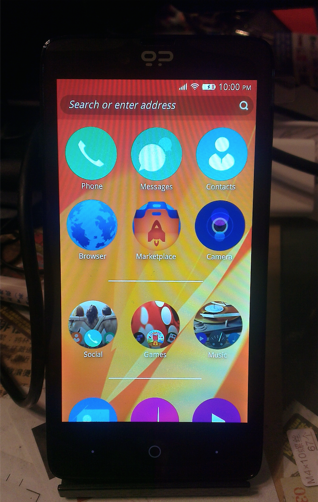
開箱文就寫到這邊了，我將在下一篇文章講我是如何購買這隻手機的。